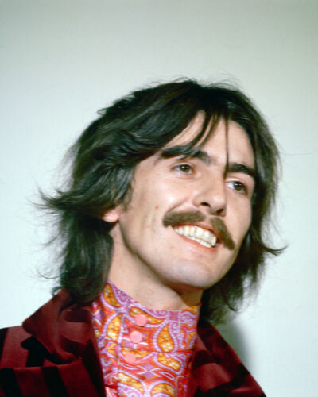

George Harrison
George Harrison a fost chitaristul principal al trupei The Beatles și unul dintre cei trei membri fondatori.
Harrison a adus o influență muzicală distinctă în repertoriul formației, explorând sunetele indiene și muzica spirituală în compozițiile sale.
Compozițiile sale celebre în cadrul trupei The Beatles includ "Here Comes the Sun" și "While My Guitar Gently Weeps".
George Harrison a fost cunoscut și pentru abilitățile sale la sitar, aducând sunete exotice și inovatoare în muzica formației.
El a adus și o contribuție semnificativă la tehnica chitarei solo, oferind solouri de chitară distinctive în piesele trupei.
Harrison a fost, de asemenea, pasionat de meditație și spiritualitate, aducând elemente de reflecție și profunzime în compozițiile sale.
Colaborarea sa cu Lennon și McCartney în cadrul trupei a dus la o dinamică creativă înfloritoare și la un schimb constant de idei muzicale.
Harrison a fost recunoscut și pentru latura sa umanitară, organizând Concertul pentru Bangladesh în 1971, primul concert caritabil de amploare din istoria muzicii pop.
Evoluția sa ca muzician și compozitor în cadrul trupei The Beatles a fost impresionantă, aducând o adâncime și o varietate de stiluri în muzica formației.
Moștenirea lui George Harrison în cadrul trupei The Beatles constă în contribuția sa unică la sunetul formației, în compozițiile sale remarcabile și în pasiunea sa pentru explorarea muzicii și a spiritualității.